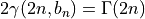
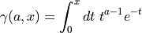

Miscellaneous¶
Code author: Wilfried Mercier - IRAP <wilfried.mercier@irap.omp.eu>
Miscellaneous functions related to galaxy computations.
-
galaxy.misc.PSFconvolution2D(data, arcsecToGrid=0.03, model={'FWHMX': 0.8, 'FWHMY': 0.8, 'name': 'Gaussian2D', 'sigmaX': None, 'sigmaY': None, 'unit': 'arcsec'}, verbose=True)[source]¶ Code author: Wilfried Mercier - IRAP <wilfried.mercier@irap.omp.eu>
Convolve using fast FFT a 2D array with a pre-defined (2D) PSF.
Note
How to use
Best practice is to provide the PSF model FWHM or sigma in arcsec, and the image pixel element resolution (arcsecToPixel), so that the fonction can convert correctly the PSF width in pixels. You can provide either the FWHM or sigma. If both are given, sigma is used.
- Parameters
data (2D ndarray) – data to be convolved with the PSF
arcsecToGrid (float) – (Optional) conversion factor from arcsec to the grid pixel size, that is the width and height of a single pixel in the X and Y grids. Default is the pixel size of HST-ACS images (0.03”/px).
model (dict) – (Optional) dictionnary of the PSF (and its parameters) to use for the convolution. Default is a (0, 0) centred radial gaussian (muX=muY=0 and sigmaX=sigmaY) with a FWHM corresponding to that of MUSE (~0.8”~4 MUSE pixels). For now, only 2D Gaussians are accepted as PSF.
verbose (bool) – (Optional) whether to print text on stdout or not
- Returns
a new convolved image
- Return type
2D ndarray[float]
- Raises
ValueError –
if unit key in model dict is not a valid astropy unit
if the PSF is not a 2D Gaussian model
-
galaxy.misc.checkAndComputeIe(Ie, n, bn, re, mag, offset, noError=False)[source]¶ Code author: Wilfried Mercier - IRAP <wilfried.mercier@irap.omp.eu>
Check whether Ie is provided. If not, but the magnitude and magnitude offset are, it computes it.
- Parameters
bn (float) – bn factor appearing in the Sersic profile (see below)
Ie (float) – intensity at effective radius
mag (float) – total integrated magnitude
n (int or float) – Sersic index
offset (float) – magnitude offset
re (float) – half-light/effective radius
noError (bool) – (Optional) whether to not raise an error or not when data is missing to compute the intensity. If True, None is returned.
- Returns
Ie if it could be computed or already existed, or None if noError flag is set to True.
- Return type
int or float or None
- Raises
ValueError – if neither Ie, nor mag and offset are provided
Note
The bn factor is defined by the following equation

-
galaxy.misc.check_bns(listn, listbn)[source]¶ Code author: Wilfried Mercier - IRAP <wilfried.mercier@irap.omp.eu>
Given a list of bn values, check those which are not given (i.e. equal to None), and compute their value using the related Sersic index.
- Parameters
listbn (list[float]) – list of bn values
listn (list[int] or list[float]) – list of Sersic indices
- Returns
list of bn values
- Return type
list[float]
-
galaxy.misc.compute_bn(n)[source]¶ Code author: Wilfried Mercier - IRAP <wilfried.mercier@irap.omp.eu>
Compute the value of bn used in the definition of a Sersic profile
- Parameters
n (int or float) – Sersic index of the profile
- Returns
bn
- Return type
float
-
galaxy.misc.fromStructuredArrayOrNot(gal, magD, magB, Rd, Rb, noStructuredArray)[source]¶ Code author: Wilfried Mercier - IRAP <wilfried.mercier@irap.omp.eu>
Store values of the disk magnitude, the bulge magnitude, the disk effective radius and the bulge effective radius either directly from the given values or from a numpy structured array.
- Parameters
gal (structured ndarray) – structured array with data for all the galaxies. The required column names are ‘R_d_GF’ (re for the disk component), ‘R_b_GF’ (re for the bulge component), ‘Mag_d_GF’ (the total integrated magnitude for the disk component), ‘Mag_b_GF’ (the total integrated magnitude for the bulge component).
magB (float or list(float)) – total magnitude of the bulge component of the galaxies
magD (float or list(float)) – total magnitude of the disk component of the galaxies
Rb (float or list(float)) – half-light radius of the bulge components of the galaxies
Rd (float or list(float)) – half-light radius of the disk components of the galaxies
noStructuredArray (bool) – if False, the structured array gal will be used. If False, values of the magnitudes and half-light radii of the two components must be given.
- Returns
the disk magnitude, the bulge magnitude, the disk effective radius and the bulge effective radius
- Return type
float, float, float, float
-
galaxy.misc.intensity_at_re(n, mag, re, offset, bn=None)[source]¶ Code author: Wilfried Mercier - IRAP <wilfried.mercier@irap.omp.eu>
Compute the intensity of a given Sersic profile with index n at the position of the half-light radius re. This assumes to know the integrated magnitude of the profile, as well as the offset used for the magnitude definition.
- Parameters
mag (float) – total integrated magnitude of the profile
n (int or float) – Sersic index of the given profile
offset (float) – magnitude offset used in the defition of the magnitude system
re (float) – effective (half-light) radius
bn (float) – (Optional) bn factor appearing in the Sersic profile defined as $2gamma(2n, bn) = Gamma(2n)$. If None, its value will be computed from n.
- Returns
the intensity at re
- Return type
float
-
galaxy.misc.mergeModelsIntoOne(listX, listY, listModels, pixWidth, pixHeight, xlim=None, ylim=None)[source]¶ Code author: Wilfried Mercier - IRAP <wilfried.mercier@irap.omp.eu>
Sum the contribution of different models with distorted X and Y grids into a single image with a regular grid.
Note
How to use
Provide the X and Y grids for each model as well as the intensity maps.
Warning
pixWidth and pixHeight parameters are quite important as they will be used to define the pixel scale of the new regular grid. Additonally, all data points of every model falling inside a given pixel will be added to this pixel contribution.
In principle, one should give the pixel scale of the original array (before sky projection was applied).
- Parameters
ndarray] listX (list[2D) – list of X arrays for each model
ndarray] listY (list[2D) – list of Y arrays for each model
ndarray] listModels (list[2D) – list of intensity maps for each model
pixWidth (float) – width (x-axis size) of a single pixel. With numpy meshgrid, it is possible to generate grids with Nx pixels between xmin and xmax values, so that each pixel would have a width of (xmax-xmin)/Nx.
pixHeight (float) – height (y-axis size) of a single pixel. With numpy meshgrid, it is possible to generate grids with Ny pixels between ymin and ymax values, so that each pixel would have a height of (ymax-ymin)/Ny.
xlim (2-tuple[float]) – (Optional) lower and upper bounds (in that order) for the x-axis. If None, a symmetric grid in X is done, using the maximum absolute X value found.
ylim (2-tuple[float]) – (Optional) lower and upper bounds (in that order) for the y-axis. If None, a symmetric grid in Y is done, using the maximum absolute Y value found.
- Results
a new X grid, a new Y grid and a new model intensity map with the contribution of every model summed up
- Return type
2D ndarray, 2D ndarray, 2D ndarray
- Raises
TypeError – if xlim or ylim are neither None, nor a tuple, nor a list
-
galaxy.misc.projectModel2D(model, inclination=0, PA=0, splineOrder=3, fillVal=0)[source]¶ Code author: Wilfried Mercier - IRAP <wilfried.mercier@irap.omp.eu>
Project onto the sky a 2D model of a galaxy viewed face-on.
Note
- Sky projection is used with scipy ndimage functions. Two projections are applied (in this order):
inclination: the 2D model is rotated along the vertical axis passing through the centre of the image
PA rotation: the (inclined) model is rotated clock-wise in the sky plane
If you do not desire to apply one of the following coordinate transform, either do not provide it, or let it be 0. By default, no transform whatsoever is applied.
- Parameters
model (2D ndarray) – intensity map of the model
inclination (int or float) – (Optional) inclination of the galaxy on the sky in degrees
fillVal (int or float) – (Optional) value used to filled pixels with missing data
PA (int or float) – (Optional) position angle of the galaxy on the sky in degrees. Generally, this number is given between -90° and +90°
splineOrder (int) – (Optional) order of the spline used to interpolate values at new sky coordinate
- Returns
a new image (intensity map) projected onto the sky with interpolated values at new coordinate location
- Return type
2D ndarray
- Raises
ValueError – if PA not in [-90°, +90°] range or if model image is not 2-dimensional
-
galaxy.misc.realGammainc(a, x)[source]¶ ‘ .. codeauthor:: Wilfried Mercier - IRAP <wilfried.mercier@irap.omp.eu>
Unnormalised lower incomplete gamma function

- Parameters
a (int or float) – power of the gamma function
x (int or float) – upper bound of the integral
- Returns
the incomplete gamma function
- Return type
float
-
galaxy.misc.rotateGalaxy(model, PA=0, splineOrder=3, fitIn=False, fillVal=nan)[source]¶ Code author: Wilfried Mercier - IRAP <wilfried.mercier@irap.omp.eu>
Apply PA rotation to a galaxy image.
- Parameters
model (2D ndarray) – intensity map of the galaxy model
fillVal (int or float) – (Optional) value to fill pixels which may become empty
fitIn (bool) – (Optional) whether to resize the image to fit it in or not. If False a new image is generated with the same dimensions.
PA (int or float) – (Optional) rotation angle to apply (counted clock-wise in degrees). Default is 0 so that no rotation is applied.
splineOrder (int) – (Optional) order of the spline used to compute the intensity value at new pixel location
- Returns
a new image of a galaxy rotated by a certain angle
- Return type
2D ndarray
- Raises
ValueError – if model image is not 2-dimensional
-
galaxy.misc.tiltGalaxy(model, inclination=0, splineOrder=3, fillVal=nan)[source]¶ Code author: Wilfried Mercier - IRAP <wilfried.mercier@irap.omp.eu>
Tilt a galaxy image around the South-North axis (assumed vertical) passing through the image centre.
- Parameters
model (2D ndarray) – intensity map of the galaxy model
fillVal (int or float) – (Optional) value to fill pixels which may become empty
fitIn (bool) – (Optional) whether to resize the image to fit it in or not. If False, a new image is generated with the same dimensions.
inclination – (Optional) rotation angle to apply (counted clock-wise in degrees). Is 0, no rotation is applied.
splineOrder (int) – (Optional) order of the spline used to compute the intensity value at new pixel location
- Returns
a new image of a galaxy tilted by some angle around the vertical axis passing through the image centre
- Return type
2D ndarray
- Raises
ValueError – if model image is not 2-dimensional